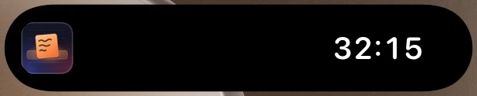
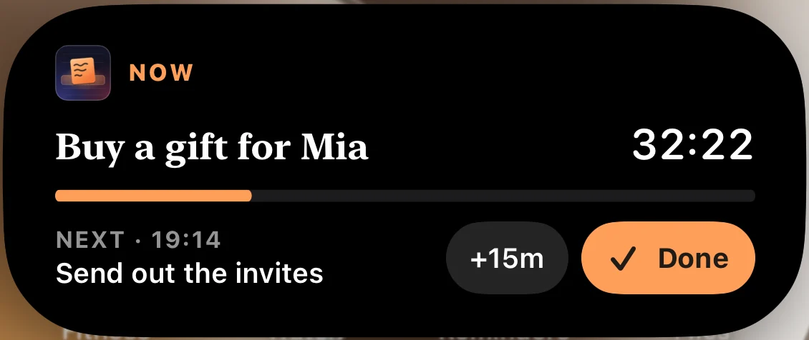
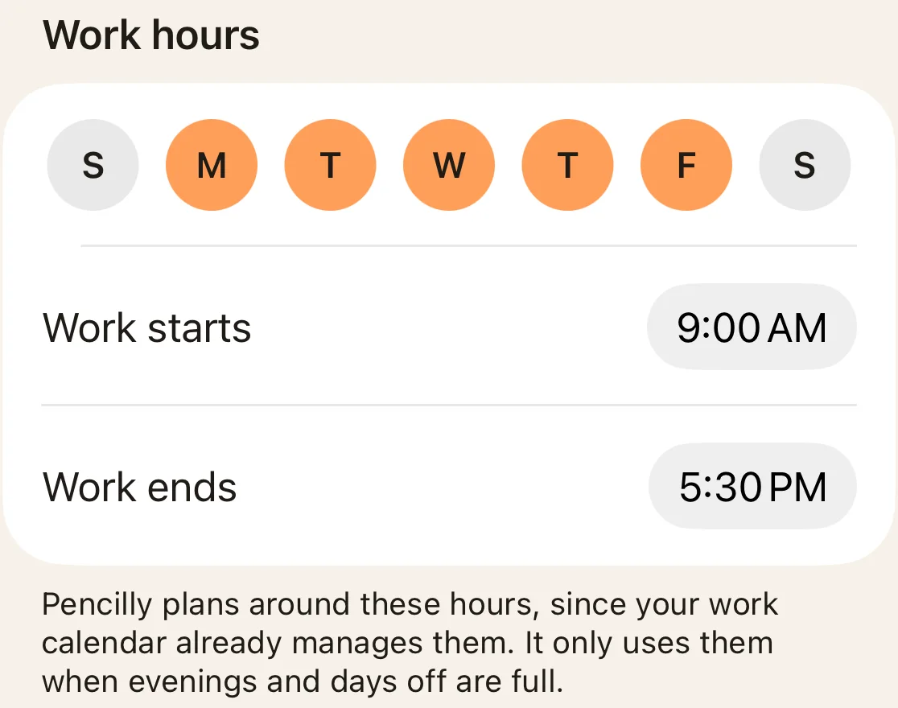
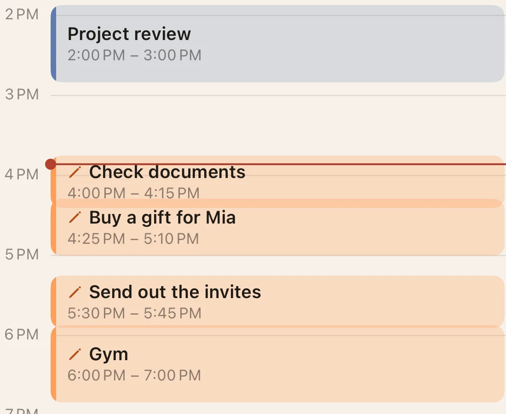

The private planner for iPhone
Say what's on your plate.Pencilly finds the time.
Type it, paste it, scan it or say it. Pencilly slots every task into the gaps of your real calendar, privately, on your iPhone.


Scan to download
Point your iPhone camera here.
- First 10 plans free
- No account
- Nothing leaves your iPhone
A plan from the app, replayed. Hover to pause.
The planner you don't have to open
Most task apps make you stop, open them and type. Pencilly meets you wherever the thought hits.
Siri
“Hey Siri, add tasks to Pencilly.”
Say your list. Pencilly plans it and puts it on your calendar without opening the app.
Back Tap and Action Button
Double-tap the back of your iPhone.
Set it up once in Shortcuts. After that, a tap, a sentence, and your list is planned.
Share sheet
Share from any app.
Send a chat, a note or a screenshot straight into Pencilly.
Scan
Point at a list.
Scan a page with your camera or pick a photo. Reading happens on your iPhone.
Ask later
“What's next in Pencilly?”
Ask Siri for your next task without picking up the app.
Dynamic Island and Lock Screen
Your next task, always in view.
The task you're on lives in the Dynamic Island and on the Lock Screen, with a countdown. A glance tells you what's now and what's next.
- Done when you finish. +15 min when it runs over, and Pencilly re-plans the rest of your day.
- A gentle sound and a “Starting now” alert mark the start of each task.
- No Dynamic Island? You still get the Lock Screen card.



Privacy
Your calendar never leaves your phone.
Pencilly is built so there's nowhere for your data to go.
A cloud planner
Your calendarTheir serversA cloud AIYour planPencilly
Your calendarYour iPhoneYour plan- No account
- No servers
- No analytics or ads
- On-device AI and rules
- Scan and voice on-device
- Optional Face ID lock
Apple Intelligence runs on your iPhone, not in the cloud. On other iPhones, built-in rules do the reading. Read the privacy policy.
It understands how you actually write.
Pencilly tells apart "at 3pm" from "by 3pm", and it explains every choice in plain words.
Gym at 6pmA fixed time. Booked at 6:00 PM.
Send the report by FridayA deadline. It goes in well before.
Urgent: call the bankTakes the first free gap.
Groceries after workWaits until your workday ends.
Email Sam before lunchDone before your lunch break.
Water the plants in 10 minutesStarts then.
Your day, your rules
Plays by the rules you set.
Tell Pencilly your hours once. It does the rest.
- Lunch and dinner stay free.
- Work hours are avoided for every task, unless nothing else fits.
- A gap is left around meetings. Nothing lands on top of one.
- A time you state is always honoured, with a warning if it clashes.


You stay in charge.
A plan you can trust is one that never surprises you.
Nothing is saved until you say so
Review the plan first. Events only reach your calendar when you tap Add to calendar.
Undo in one tap
Changed your mind? Undo takes the whole plan back off your calendar.
Every card explains itself
A one-line reason sits under each task, in Pencilly's own words. Tap any card to adjust it.
Free to start
Try it on real weeks before you decide.
Free
10 plans
Your first 10 plans added to your calendar cost nothing.
$34.99 a year
7-day free trial. Or $4.99 a month. Cancel anytime in your Apple ID settings.
US prices, billed by Apple. See the terms.
Questions
Short answers. More on the support page.
Is Pencilly free?
The first 10 plans you add to your calendar are free. After that, Pencilly Pro is $34.99 a year with a 7-day free trial, or $4.99 a month (US prices). Manage or cancel in your Apple ID subscriptions.
Does Pencilly need an account or send my calendar anywhere?
No. There are no accounts and no servers. Your calendar, tasks, voice and images stay on your iPhone, and the developer collects no data. Read the privacy policy.
Does it work with Siri, Shortcuts and Back Tap?
Yes. Pencilly adds Siri phrases and Shortcuts actions: "Add tasks to Pencilly" plans and saves tasks without opening the app, "What's next in Pencilly" tells you your next task, and "Plan my week with Pencilly" opens the app with your list. Set the same actions up once in Shortcuts to run them from Back Tap or the Action Button. Adding tasks by Siri uses Pencilly's built-in rules and needs calendar access already granted.
Which iPhones does it work on?
Any iPhone running iOS 18 or later. On an iPhone with Apple Intelligence (iOS 26 or later) Pencilly also uses Apple's on-device model to understand messy text; everywhere else, built-in rules do the work.
Will it double-book me?
No. It never overlaps an existing event, keeps lunch and dinner free, respects your work hours and leaves a gap around events. If your calendar changes while you review a plan, Pencilly checks again when you tap Add and moves anything that now clashes.
Can I lock Pencilly with Face ID?
Yes. Settings has an optional Face ID lock. It uses your iPhone's own authentication and stores nothing anywhere else.
How do I undo a plan?
Tap Undo right after adding it, or delete the events from the "Pencilly" calendar in your Calendar app. Nothing is written until you tap Add to calendar.
What languages does it understand?
English only for now.
Pencilly at a glance
- What it is
- A day and week planner for iPhone that schedules your to-do list into free time in your calendars.
- Works on
- iPhone, iOS 18 or later. Apple Intelligence (iOS 26 or later) is optional.
- Ways in
- Type, paste, scan, voice, share sheet, Siri, Shortcuts, Back Tap and Action Button.
- Data collected
- None. No account, no analytics, no ads, no third-party SDKs.
- Price (US)
- First 10 plans free. Pencilly Pro: $34.99 a year with a 7-day free trial, or $4.99 a month.
- Language
- English
New to time blocking? Read how to plan your week from a messy to-do list.
Say it once. Let Pencilly find the time.
Your first 10 plans are free. No account to make.